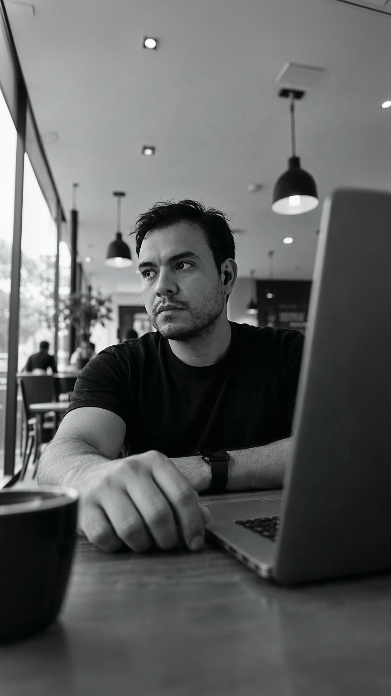
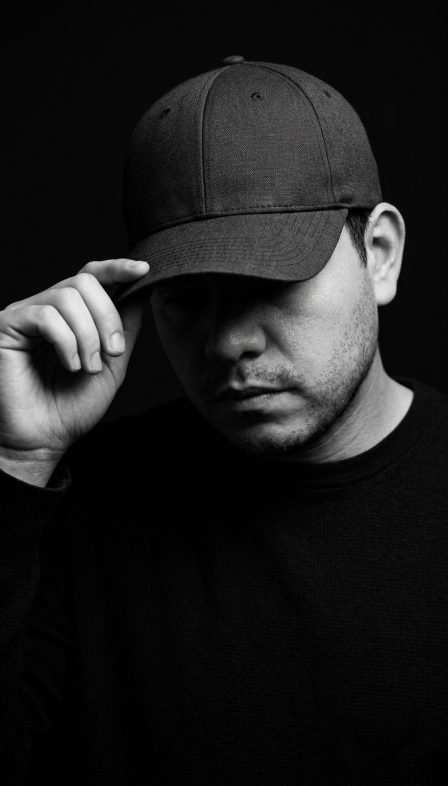
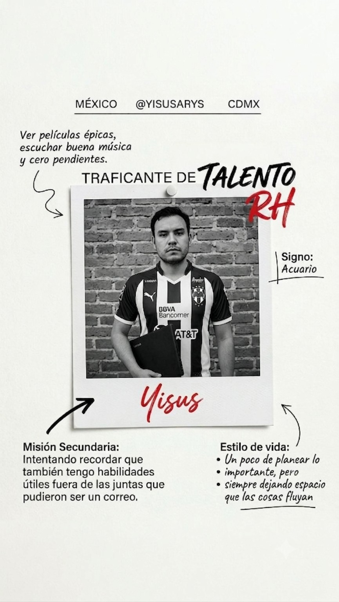
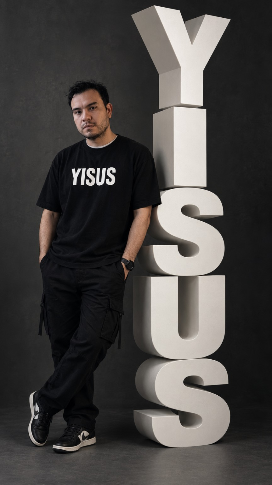
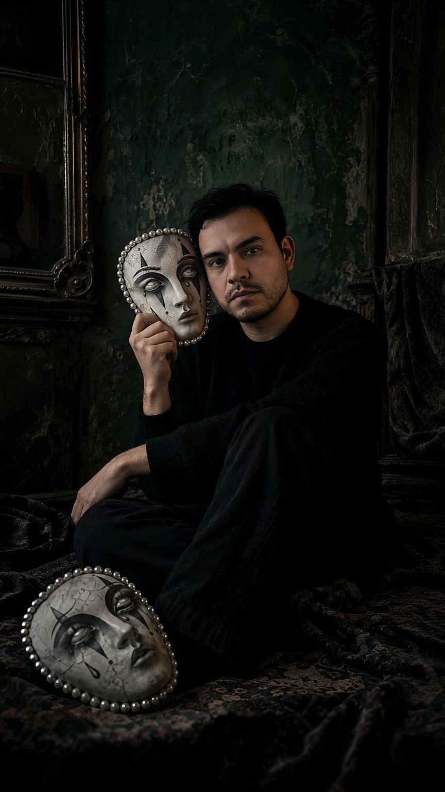

AÑOS 80
Aparecí en la simulación
Nacimiento. Sin tutorial, sin manual de usuario y claramente sin haber aceptado los términos y condiciones.
RH por supervivencia.
Creativo por insistencia.
Colocar humanos dentro de corporaciones a cambio de quincenas, mientras construyo la vida que sí me emociona.
Proyectos creativos • Colaboraciones • Conversaciones interesantes


Godín de RH por decisión estratégica del capitalismo, fotógrafo por pasión, creador por inquietud y un eterno aprendiz de la vida.
Me interesan la gente, las historias, la creatividad y todo lo que me saque de la rutina.
Algunas fechas son exactas, otras viven mejor como recuerdos. Trabajo, familia, amor, reinicios y muchos kilómetros en medio.
Nacimiento. Sin tutorial, sin manual de usuario y claramente sin haber aceptado los términos y condiciones.
Años de escuela, aprendizaje y primeras pistas de que la vida adulta iba a incluir demasiados pendientes.
Me casé. Comenzó una etapa distinta: construir una vida compartida y aprender sobre la marcha.
Fui padre. De pronto el mundo dejó de tratarse solamente de mí y apareció una responsabilidad capaz de cambiar prioridades.
Comenzó mi vida laboral. Desde entonces seguimos intercambiando horas de existencia por quincenas, aprendizaje y algunas buenas historias.
Carreteras, ciudades y destinos sin demasiado plan. Algunas de las mejores historias empezaron simplemente con salir de casa.
Llegó la separación. Una de esas etapas donde toca cerrar, reorganizar piezas y aprender a caminar de otra forma.
Le di una nueva oportunidad al amor. Porque aparentemente aprender del pasado no elimina las ganas de intentarlo otra vez.
No funcionó. Se cerró esa historia y quedó lo aprendido, que suele ser bastante más útil que fingir que nada pasó.

Asesoría para tu perfil profesional y experiencias web a la medida de tu negocio o evento.
Revisión, estructura y redacción para comunicar mejor tu experiencia y habilidades. Un CV claro, orientado a la vacante y preparado para su lectura en sistemas ATS.
Páginas que presentan tus servicios, muestran lo que hace especial a tu negocio y facilitan que tus clientes te contacten desde su celular.
Invitaciones personalizadas para bodas, cumpleaños y eventos, con los detalles de la celebración, ubicación y opciones para confirmar asistencia.
Herramientas sencillas para organizar citas y reservas. Podemos incluir confirmaciones por WhatsApp y conexión con Google Calendar, según lo que necesite tu negocio.
Cuéntame qué necesitas y damos forma a tu proyecto.
Platiquemos de tu proyectoLanding page interactiva y homenaje visual. Un proyecto que mezcla creatividad, humor y cultura, inspirado en lo que nos hace únicos.
Visitar proyectoExplorar
Pequeños datos que explican mejor a la persona detrás del perfil.

Recursos Humanos: apoyando personas, escuchando y siendo parte de soluciones.
Sin género en particular; si la canción transmite algo, va directo a la playlist.
Con mi abuela, para volver a escuchar sus historias.

Acompañamiento, lealtad, apoyo y reírse mucho en equipo.
Nada es para siempre. La vida y las personas son una montaña rusa: hay que disfrutar los altos y aprender de los bajos.